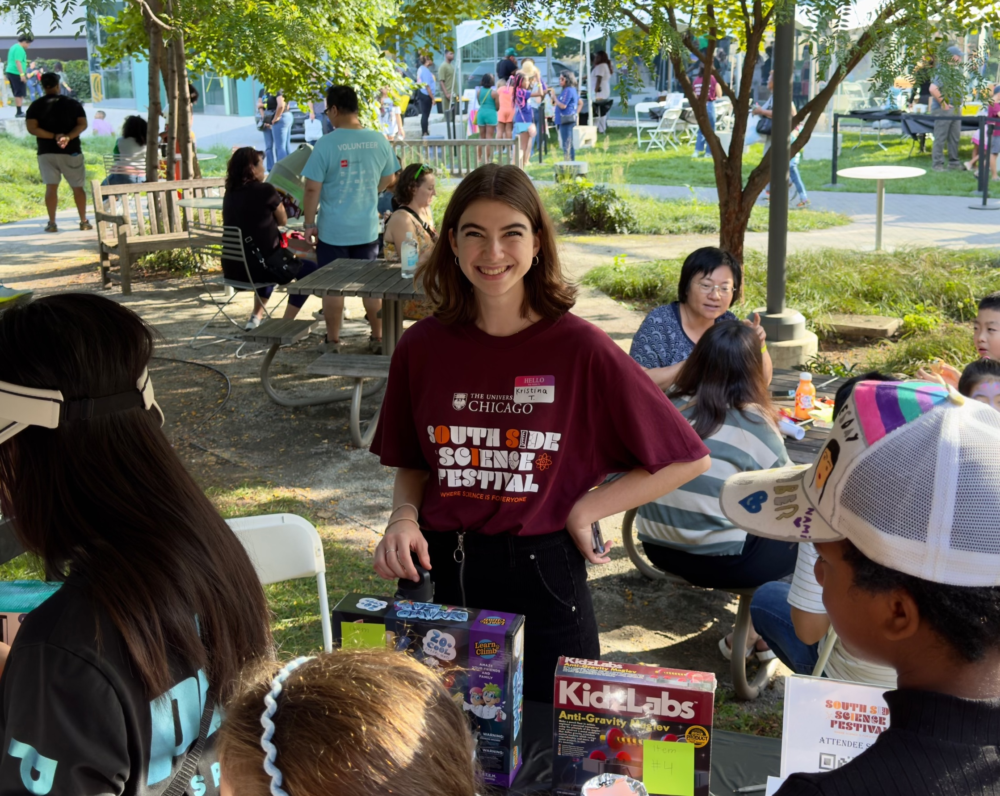

<nav>
	<ul>
		<li><a href="/">ABOUT</a></li>
		<li><a href="/research">RESEARCH</a></li>
		<li><a href="/publications">PUBLICATIONS</a></li>
    	<li><a href="/notes">NOTES</a></li>
		<li><a href="/CV_Trifonova.pdf" target="_blank">CV</a></li>
		<li><a href="/contact">CONTACT</a></li>
		<li><a id="miscellaneous" class="active" href="/miscellaneous">MISCELLANEOUS</a></li>
	</ul>
</nav>

 <div class="miscellaneous">
	 
<h2><strong>Art & Creations</strong></h2>
<div class="gallery">
  <div class="gallery-item">
    
    <p>Sgraffito!</p>
  <!-- </div>
  <div class="gallery-item">
    
    <p>Upcoming: silkscreen print</p>
  </div> -->
</div>

<!-- <div class="personal-highlights">
  <h2><strong>Inspiration Beyond the Lab</strong></h2>
	
  <div class="vignette">
    
    <div>
      <h3>Recent Highlights</h3>
      <p>Joffrey Ballet’s <em>Carmen</em>, concerts at Lincoln Hall, and exploring the “Shipwreck” installation in Hyde Park.</p>
    </div>
  </div>

  <div class="vignette">
    
    <div>
      <h3>What I’m Reading</h3>
      <p>Find me on <a href="https://www.goodreads.com/yourusername" target="_blank">Goodreads</a>, <a href="https://open.spotify.com/user/yourspotifyid" target="_blank">Spotify</a>, or check out some papers and podcasts that have inspired me lately.</p>
    </div>
  </div>
</div> -->

<!-- <h2><strong>What I'm Into Lately</strong></h2>
<ul>
  <li><strong>Reading:</strong> <a href="https://www.goodreads.com/yourusername" target="_blank">Find me on Goodreads</a> – recent favorites: <em>The Overstory</em>, <em>The Passenger</em></li>
  <li><strong>Podcasts:</strong> Science Vs, The Ezra Klein Show</li>
  <li><strong>Papers:</strong> <a href="https://doi.org/10.xxxx" target="_blank">Paper Title</a> – something that reshaped my thinking recently</li>
  <li><strong>Music:</strong> <a href="https://open.spotify.com/user/yourspotifyid" target="_blank">Spotify profile</a> – I’ve been obsessed with Caroline Polachek & Allie X lately</li>
  <li><strong>Outdoors:</strong> Climbing, running, and biking around Chicago</li>
</ul> -->

	<!-- <h2><strong>Department Leadership</strong></h2>
		<ol>
			<li><p><strong>Co-Lead Organizer, Chemistry Math Bootcamp:</strong> Led design and expansion of a two-week math readiness initiative for 20+ incoming chemistry graduate students, securing $2K funding and coordinating 10 facilitators to ensure high-quality delivery across multiple educational sessions</p></li>
			<li><p><strong>President, Women in Chemistry Organization:</strong> Managed $5K budget, secured university- and city-wide partnerships, and increased event turnout for 80+ members</p></li>
			<li><p><strong>Organizer, Chemistry First Year Journal Club:</strong> Led organization of weekly, low-stakes seminar series for first year chemistry graduate students</p></li>
		</ol>
<br>
	 	<h2><strong>Teaching</strong></h2>
		<ol>
			<li><p><strong>General Chemistry Teaching Assistant (2023-2024):</strong>
				<p>I taught the year-long general chemistry course sequence with complimentary labs at the University of Chicago.</p>
				<p>I managed and provided support to 20 students in lecture and lab settings, by creating and implementing weekly recitation lesson plans, devising grading rubrics, and grading homework, lab assignments, and course exams. I provided additional student support by holding twice-weekly office hours, review sessions, and creating supplemental learning material.</p> 
			</li>
		</ol>
		
<br>
		<h2><strong>Outreach</strong></h2>
			<ol>
				<li><p><strong>Volunteer, South Side Science Festival:</strong> Led organizational efforts with the Logistics and Equity teams for the 2024 South Side Science Festival and presented physics and chemistry demos for 3000+ festival attendees.</p></li>
				<li><p><strong>Initiative Lead, Emory Chemistry Alumni PhD Panel:</strong> Organized panel with recent Emory alumni pursuing chemistry PhDs at six different universities, reaching 20+ students, many of whom matriculated into doctoral programs </p></li>
				<li><p><strong>Mentor, Illinois Science & Technology Coalition:</strong> Mentored high school students doing science and engineering projects, guiding their research and presentation skills development</p></li>
				<li><p><strong>The University of Chicago Physical Sciences Division Pen Pal:</strong> To demystify STEM education and careers, humanize STEM professionals, and empower middle school students to explore a future in STEM, I write to a 6th-grade student at a local middle school, following several letter themes and addressing the students’ responses.</p></li>
			</ol>
			
		<br> -->
	 
</div>
